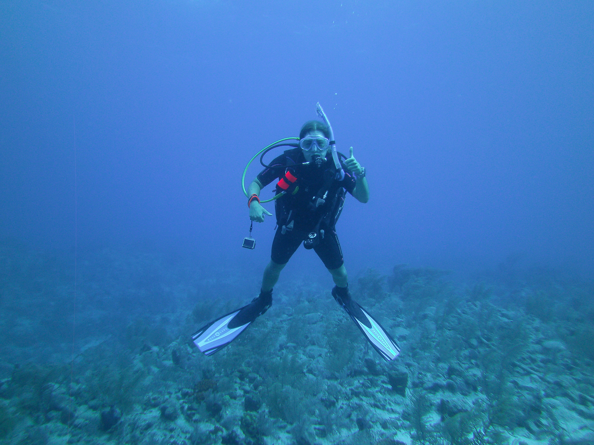

From an internship that sparked a calling to a master's degree and a full-time development role — each step has sharpened my ability to connect resources with the communities that need them most.
March 2026 — Present
Development & Outreach Coordinator
The Bridge Ministries (Food Pantry) · Bryan, Texas
Support donor stewardship and development operations at a community food pantry, including donor correspondence, Bloomerang CRM reporting, grant application research, and building out a client survey system. Also coordinate community outreach events — developing programming and selecting vendors to extend the organization's reach.
May 2025 — March 2026
Annual Giving Student Assistant
The Association of Former Students, Texas A&M · College Station, Texas
Engaged Aggie alumni in conversations about their Texas A&M experience while processing 50+ gifts totaling $10,000+, documenting every donor interaction in Salesforce Ascend CRM. Supported annual giving operations through donor acknowledgment letters, database accuracy maintenance, and responsive donor support.

May 2025 — August 2025
Development Intern
Allies Against Slavery · Austin, Texas (Remote)
Collaborated with program staff to prepare four grant applications and independently built a strategic 12-month funding plan identifying 150 potential grant opportunities. Created an email fundraising appeal to recurring donors that generated $2,700 in additional annual contributions.
October 2022 — May 2023
Outreach Intern
Unbound Now BCS · Bryan, Texas
Recruited and trained 100+ volunteers, co-managed a community training event that educated over 200 individuals and 100 businesses on human trafficking, and stewarded a silent auction fundraiser that hosted 300+ guests and raised $12,500 through 28 auction packages.

Summer 2022 · Four Weeks
Marine Research Participant
Field Research Program · Turks and Caicos Islands
Spent four weeks as a scuba diver and field researcher in Turks and Caicos, contributing to marine conservation data collection alongside a research team. The experience deepened my appreciation for mission-driven work in environmental contexts.
